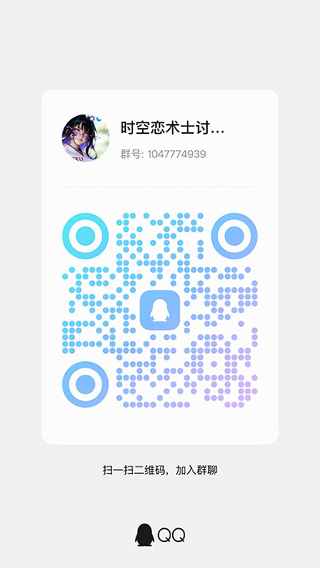

Chronoromancer on Afdian
Visit our Afdian page for a mainland-China-friendly way to support ongoing development and follow creator updates.
Visit Afdian →A sandbox RPG across three eras
Travel between a living medieval kingdom, a modern city, and a future under pressure. Build relationships, run businesses, explore dungeons, and decide which timeline survives.
Worldwide release
Choose your preferred language from the in-game settings.
For players in mainland China
Afdian and the official QQ group provide convenient, Chinese-friendly ways to follow development, receive help, and meet other players.
Visit our Afdian page for a mainland-China-friendly way to support ongoing development and follow creator updates.
Visit Afdian →Scan the QR code with QQ. If you are viewing this page on your phone, search for the group number manually.
QQ group1047774939

Open full-size QR codeYour time, your priorities
Chronoromancer combines open-ended daily life with a story about responsibility, desire, and the cost of changing history.
Carry knowledge, resources, and consequences between the medieval, present, and future worlds.
Meet a large cast with personal stories, changing loyalties, and paths shaped by your choices.
Manage businesses, train skills, play activities, take on quests, and descend into an expanding dungeon.
Three eras, one unstable timeline
Move freely between distinct settings, stories, economies, and dangers—then watch your decisions echo forward and backward through time.

Royal courts, guild rivalries, dungeon expeditions, and businesses waiting to be rebuilt.

Friendships, nightlife, careers, and quiet choices that may matter decades from now.

Cybernetic cities, synthetic lives, and the growing threat that waits beyond the timeline.
Built for an international community
This public website defaults to English and can switch instantly to complete Simplified Chinese text. The game itself supports all 11 languages shown above, including full Simplified Chinese localization.

Official English and Chinese guides
Search walkthroughs, character routes, systems, businesses, factions, and progression advice. Each completed Simplified Chinese translation appears beside its English source on the same page.
Current public release
Download Windows, Linux, macOS, and Android builds directly from our official CDN. itch.io, hosted mirrors, and BitTorrent remain available as alternative routes.
One-click downloads from our own ad-free delivery network.
Available OfficialAll current platforms, release notes, and installation instructions.
Available MirrorAlternative hosted folder for the current public builds.
Available MirrorAn additional download source for the current public builds.
Available Peer-to-peerVerified PC, macOS, and Android torrents with direct magnet links.
AvailableDownload directly without a file-host account or BitTorrent client. Downloads support pause and resume when your browser or download manager provides it.
Windows-only ZIP package.
Combined desktop ZIP package.
Dedicated ZIP package for Mac.
APK package for compatible Android devices.
Mainland China performance can vary by region and network provider. If a link opened inside WeChat or QQ does not download correctly, copy it into your device's external browser. MEGA, Google Drive, itch.io, and BitTorrent remain clearly available as alternatives.
Each torrent includes an official HTTPS web seed, allowing compatible clients to retrieve pieces even when no peer is reachable. The PC package supports both Windows and Linux.
Combined desktop package for Windows and Linux players.
Dedicated package for supported Mac computers.
APK package for compatible Android phones and tablets.
BitTorrent requires a compatible client. Clients that support HTTP web seeds can use the official direct-download server as a permanent source; other clients continue with normal trackers, DHT, and peers. Peers in the same torrent can see one another's IP addresses, so use the direct downloads above if you prefer not to participate in peer-to-peer sharing.
Stay connected
Choose whichever platform is easiest to reach. Discord remains the main community hub; Telegram provides another accessible channel.
Discussion, feedback, news, and player help.
Join Discord →Updates and another path to the community.
Open Telegram →Support ongoing development and follow studio posts.
Visit Patreon →A useful community-maintained Miraheze wiki with player knowledge, tips, and possible story spoilers.
Open the player wiki →Short development notes, images, and announcements.
Follow on Bluesky →Another place to follow public release news.
Follow on X →